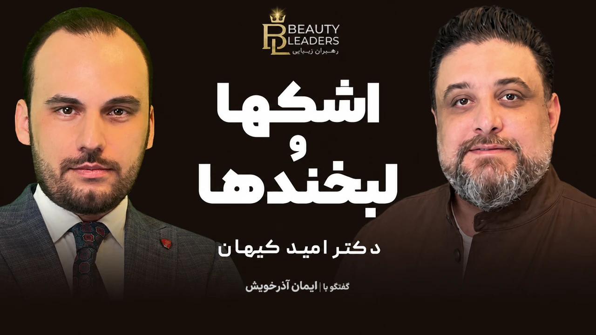
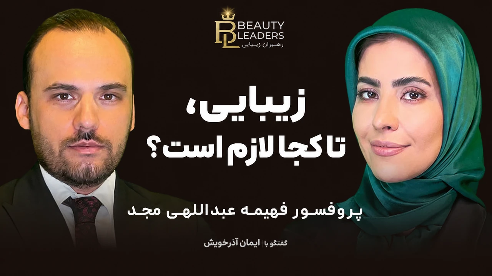
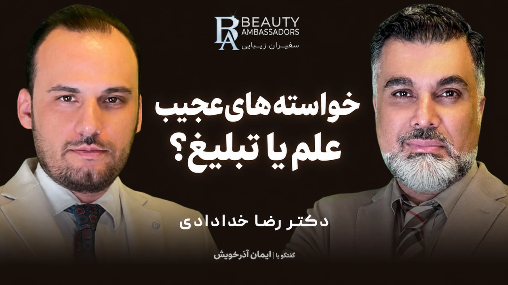
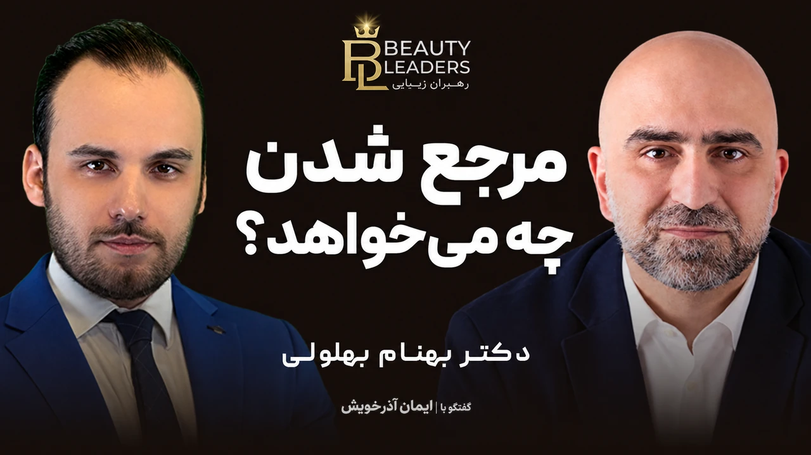

آرشیو رسانه
همه گفتگوها؛ یک آرشیو مستقل
30 گفتگوی منتشرشده با پزشکان و متخصصان؛ شامل دو مجموعه «رهبران زیبایی» و «سفیران زیبایی». در اینجا معرفی کوتاه هر مهمان را میبینید و برای تماشای ویدئو به یوتیوب میروید.

رهبران زیبایی ·
تشخیص جراح بینی معتبر از پزشک مشهور اینستاگرامی
استادتمام دانشگاه علوم پزشکی ایران؛ دارای بورد تخصصی گوش، حلق و بینی و جراحی سر و گردن؛ فلوشیپ فوقتخصصی جراحی بینی و سینوس

رهبران زیبایی ·
پشت موفقیت جهانی یک جراح ایرانی چه گذشت؟
جراح دهان، فک و صورت دارای بورد تخصصی؛ از بنیانگذاران آکادمی بینالمللی iFACE

رهبران زیبایی ·
چه زمانی یک اقدام زیبایی واقعاً لازم است؟
متخصص پوست و مو دارای بورد تخصصی؛ استادتمام دانشگاه علوم پزشکی شهید بهشتی و رئیس بخش پوست بیمارستان شهدای تجریش

رهبران زیبایی ·
در پزشکی زیبایی چه چیزی باید حرف آخر را بزند؟
استادتمام جراحی دهان، فک و صورت و استاد مدعو دانشگاه Gulf Medical University امارات

رهبران زیبایی ·
اعتبار جراح؛ از صلاحیت علمی تا مسئولیت نه گفتن
دارای بورد تخصصی گوش، حلق و بینی و جراحی سر و گردن؛ استادتمام دانشگاه علوم پزشکی تهران

رهبران زیبایی ·
جراحی در عصر اینستاگرام؛ واقعیت پشت تصاویر قبل و بعد
دارای بورد تخصصی گوش، حلق و بینی و جراحی سر و گردن؛ استادیار دانشگاه علوم پزشکی تهران

سفیران زیبایی ·
پشت صحنه کلینیک؛ از خواسته بیمار تا فشار تبلیغات
پزشک زیبایی و مدرس بینالمللی استتیک؛ دارای فلوشیپ پزشکی زیبایی از هلند


رهبران زیبایی ·
از ایران تا جراحی و آموزش در آمریکای شمالی
جراح دهان، فک و صورت؛ دارای بورد کانادا و آمریکا و بورد جراحی زیبایی صورت آمریکا؛ عضو هیئت علمی دانشگاه تورنتو
موردی پیدا نشد.